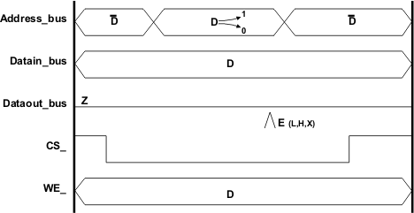
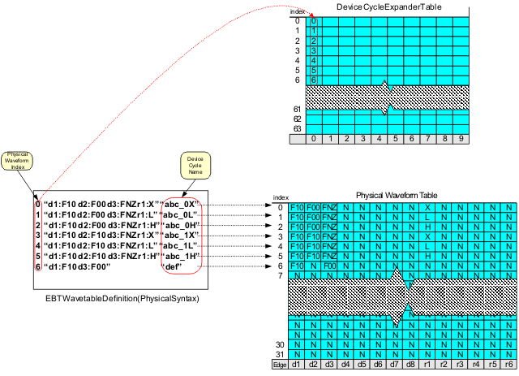
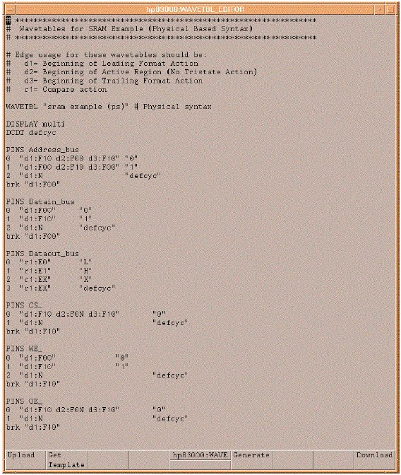

Review of EBT wavetable definitions
The wavetable is usually the first module created in an EBT definition. The wavetable defines the waveforms that are required by each pin of the device for testing. Analogous to the test system channel's timing system architecture, the wavetable definition is used to program the physical waveform table of each channel used in the test. The syntax of the wavetable provides for the definition of the physical waveform. There are two syntaxes available to define the physical waveforms, the physical syntax and the logical syntax. The V93000 test system memory test software has more than one programming method available for the generation of an APG pattern. Knowledge of both wavetable definition syntaxes is important to be able to develop patterns in all of the APG methodologies. This section will review both syntaxes. Example wavetable definitions using each syntax will be developed for the following waveforms. More specific examples of the different wavetable syntaxes will be provided in the sections that cover each APG programming method.

In the figure above, note that in the waveform the "D" symbol represents a logical parameter indicating that in some cycles of the pattern a 0 may be driven and in other cycles a 1 may be driven. Correspondingly the "D" bar represents the opposite of whatever "D" is in each cycle. Notice also on the Dataout_bus an edge receive strobe is programmed with another logical parameter, "E". Where "D" could be either drive a 0 or drive a 1, E could expect a Low (L), expect a High (H), or Do not Care (X).
Physical syntax
The physical syntax is a more direct method of programming the wavetables. The waveform definition syntax allows the user to program the physical waveforms directly instead of using logical parameters. The syntax allows each physical waveform to be defined using fixed actions. The physical actions list is identical to the logical fixed actions. The syntax to define a waveform is as follows:
{Physical Waveform # }{"Physical Waveform Definition String"} <Device Cycle Name>Examples
Example 1
0"d1:F10 d2:F00 d3:F10""abc_0" 1"d1:F00 d2:F10 d3:F00""abc_1"
This is a shortened notation of the physical syntax that does not require device cycle definitions. Because the optional device cycle name syntax is used, the waveform definitions themselves are internally expanded to a physical device cycle of length 1. This provides for each physical waveform having its own device cycle name. This syntax is much easier to visualize how it programs the hardware timing tables (see following figure).

The last detail to cover in the wavetable definition using the physical syntax is the break waveform. The syntax is almost identical to the logical syntax for a break waveform except the "BWDS" token is replaced by "brk". The syntax is
Example 2
brk {"Physical Break Waveform Definition String"}
brk "d1:F00"The figure below shows the physical wavetable definitions for the example waveforms used at the beginning of this section.
